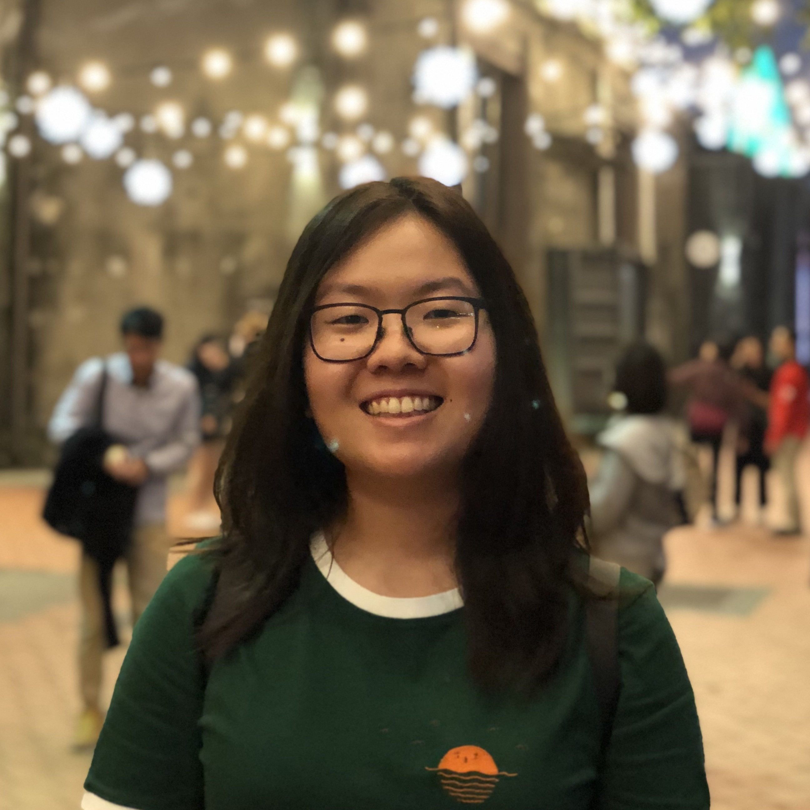
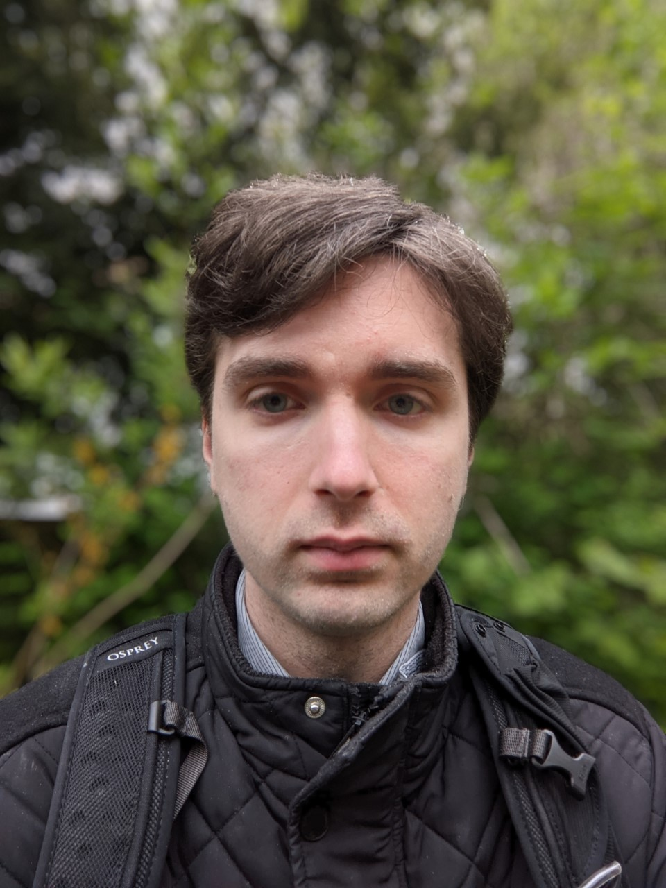
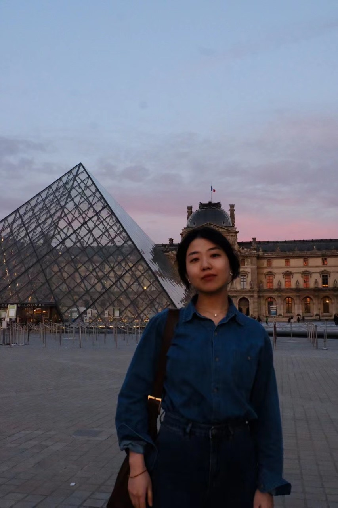
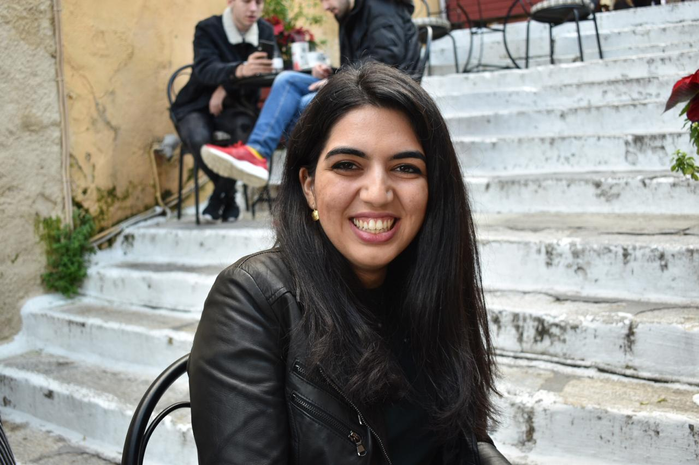
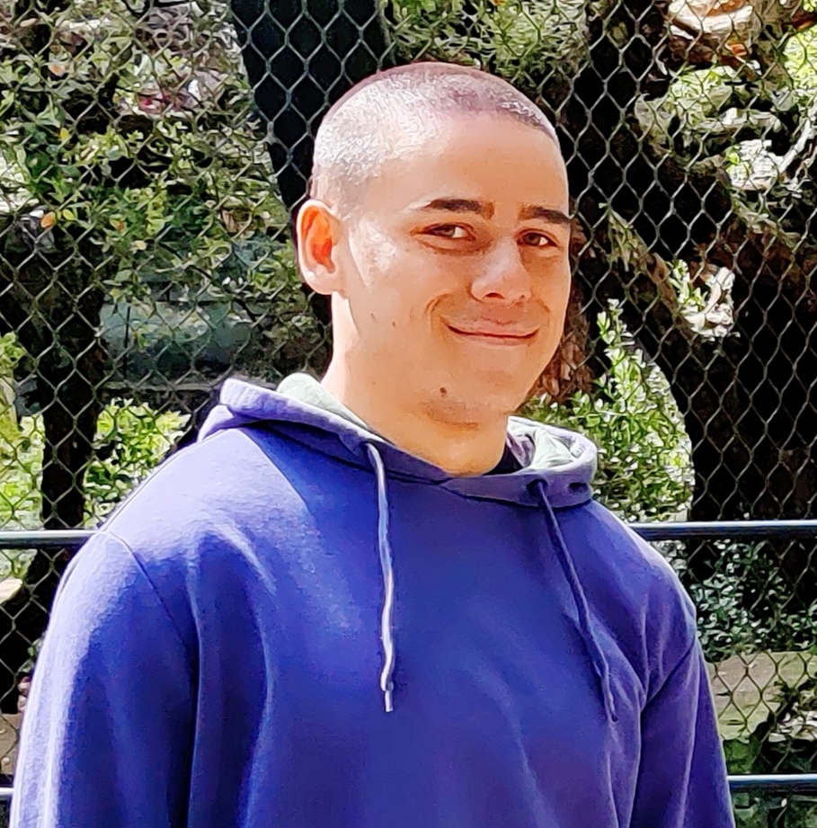
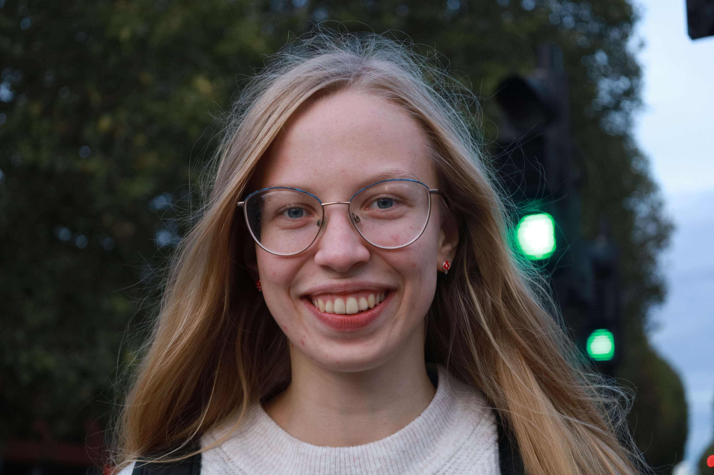

Iman is a final year PhD Candidate at University of Warwick working under the mentorship of Prof Rob Procter and Prof Maria Liakata. Her past work focused on the construction of a pipeline for social media which identified coherent clusters of posts and automatically summarised their contents. She is currently interested in improving explainability of classification models through summarisation.
PhD Student

Jenny is a fourth year PhD student at Queen Mary University of London (QMUL) researching longitudinal synthetic data generation and evaluation. More broadly, she is interested in improving data quality as well as developing fairer and more privacy preserving language technologies. Prior to joining QMUL, she completed her bachelor’s degree at the University of California, Los Angeles, her master’s at the University of Edinburgh, and worked on data science in the language education technology industry.
PhD Student

John is a final year NLP researcher with an interest in Fake News and Rumour Veracity. He works on systems to automatically retrieve evidence, compile knowledge graphs, and evaluate claims. His previous work focused on the same problem but without evidence, instead disentangling the content and mannerism of a claim to determine its veracity.
PhD Student
Anthony is a fourth year doctoral student at Queen Mary University of London, supervised under Professor Maria Liakata. He works on time-sensitive natural language processing with applications in mental health monitoring. Of particular interest to Anthony are identifying moments of change in mood in users, with time-aware models – as well as assisting in the efficient annotation of mental health datasets through selecting salient timelines rich in rare annotation labels. Anthony also co-organises The Alan Turing Institute’s NLP Special Interest group.
PhD Student

Jiayu is a fourth year PhD student of Queen Mary University of London supervised under Prof. Maria Liakata. She is interested in text generation. She works on unsupervised abstractive text summarization, including opinion summarization, timeline summarization and muti-modal summarisation. Before starting her PhD, she focused on language modeling during her Master’s and she completed an internship at Sogou.
PhD Student

Talia is a third year PhD student at Queen Mary University of London, working under the supervision of Prof. Maria Liakata and Dr Adam Tsakalidis. Her research focuses on temporal representation learning for user applications and specifically for mental health. She is particularly interested in the intersection of mathematics and language modeling. Prior to her PhD, Talia completed her Master’s in Applied Math at Columbia University and worked as a Senior Data Scientist building production-level Machine Learning and NLP models for Chubb Insurance in New York, Singapore and London.
PhD Student

Joe is a first year EngD student at QMUL and Canon Medical Research under Prof. Maria Liakata and Dr. Alison O'Neil. His latest work is a zero-shot classification algorithm for medical diagnostic coding that uses generative LLMs to explore diagnostic trees (e.g ICD) to search for relevant diagnostic labels.
PhD Student

Roksana is a first year PhD candidate at Queen Mary University of London, under the supervision of Dr. Haim Dubossarsky and Prof. Maria Liakata. Her research focuses on analysing lexical semantic change, particularly the representation of semantic properties by contextualised word embeddings and their use for detecting and analysing meaning change. Prior to her PhD she completed her Bachelors degree at the University of Edinburgh, focusing on interpretability of language models under the domain of fake news detection.